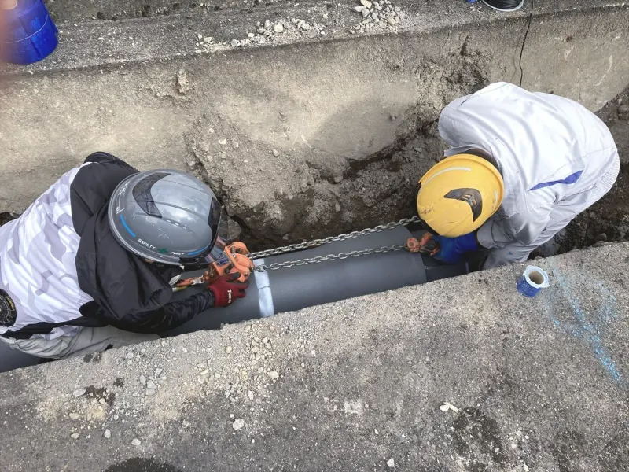
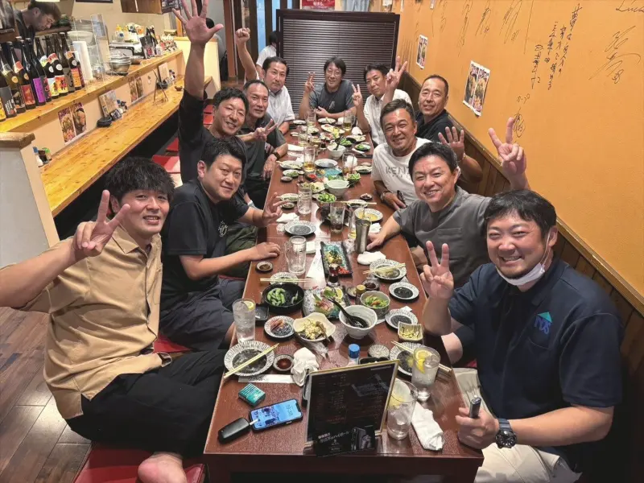
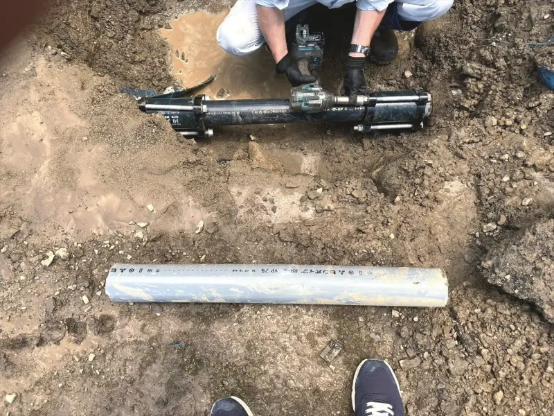
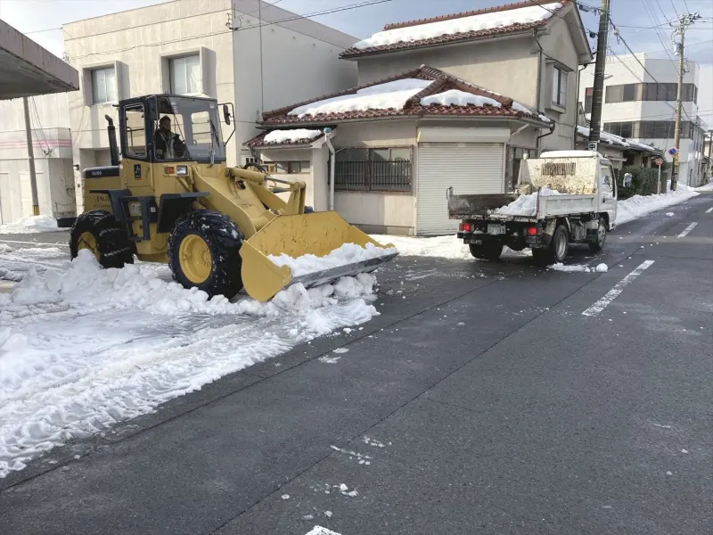
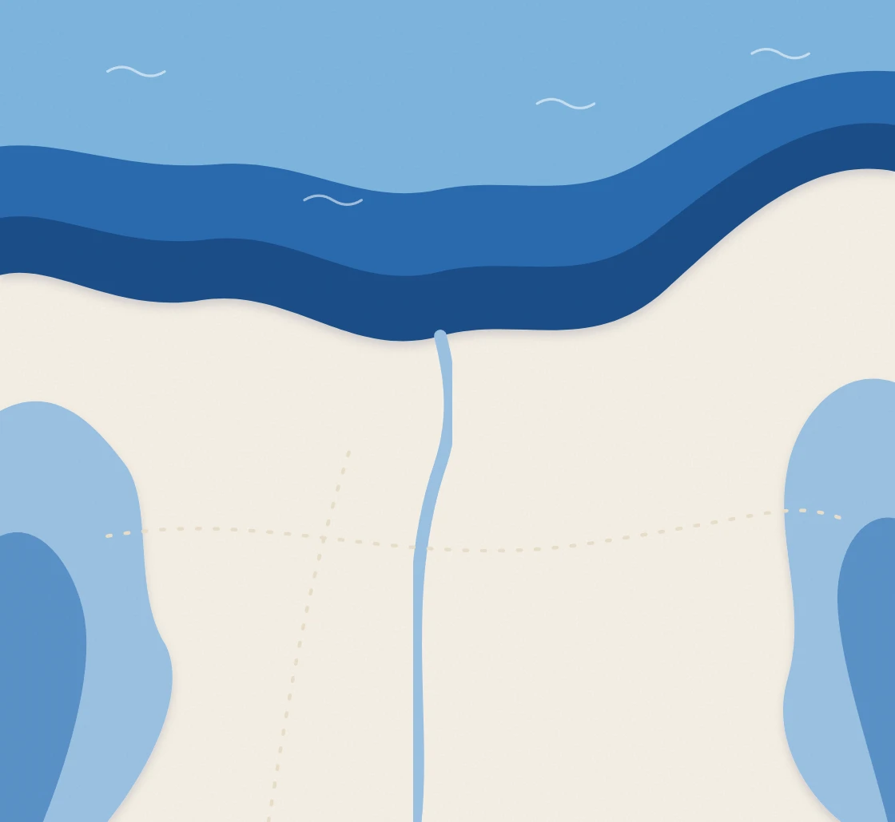

軽量化の見比べ（案2・案3）
それぞれ「今のまま」と「軽くしたもの」を A・B として並べています。どちらがどちらかは伏せてあるので、まず見比べてみてください。いちばん下のボタンで答えが出ます。
各写真の下の正方形は、中央付近を4倍に拡大したものです。実際のページでは拡大されないので、上の通常サイズで違いが分からなければ問題ありません。
案2：写真をAVIF形式にする
スマホで表示されるサイズ（横800px）で比べています。
トップの写真


チームの写真


工具の写真（細かい部分）


雪の写真


案3：地図のフェルトの質感を画像にする
敦賀マップの背景（海・山・川・フェルトの質感）だけを比べています。建物や配管は同じものが上に乗ります。

案3はファイルの重さではなく、スクロール中にブラウザがする計算を減らすための案です。画像にしても重さは24KBで、ほとんど増えません。